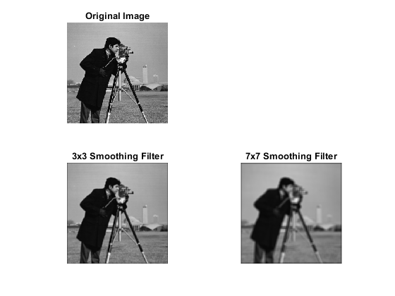
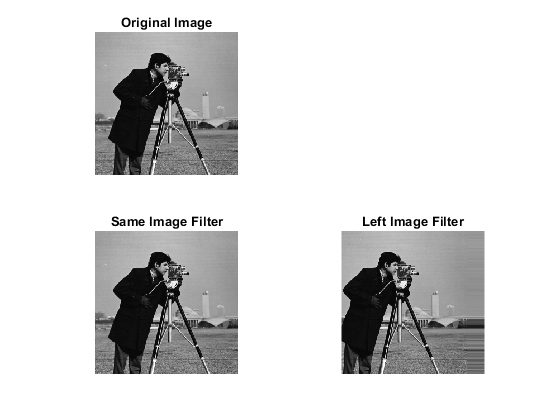

% Create two smoothing kernals, the first one should be of % dimensions 3x3, the second: 7x7. % filterOne is shown below, you will need to complete % step 1b (the 7x7 filter). %In order to create a smoothing effect we must ensure %the image keeps its original brightness and quality, %by keeping the matrix value at 1 while also lowering %the smoothness of each pixel by dividing it. In the %3x3 matrix the value to divide by is 9 since the %image is divided into 9 sections. % a. smoothingFilterOne = [1/9 1/9 1/9; 1/9 1/9 1/9; 1/9 1/9 1/9]; %For the second smoothing filter, we keep the same logic %except each pixel is divided by 49 since the image is %divided into 49 sections. % b. smoothingFilterTwo = [1/49, 1/49, 1/49, 1/49, 1/49, 1/49, 1/49; 1/49, 1/49, 1/49, 1/49, 1/49, 1/49, 1/49; 1/49, 1/49, 1/49, 1/49, 1/49, 1/49, 1/49; 1/49, 1/49, 1/49, 1/49, 1/49, 1/49, 1/49; 1/49, 1/49, 1/49, 1/49, 1/49, 1/49, 1/49; 1/49, 1/49, 1/49, 1/49, 1/49, 1/49, 1/49; 1/49, 1/49, 1/49, 1/49, 1/49, 1/49, 1/49]; % Apply both smoothing filters to the cameraman image. % The cameraman image comes with matlab and can be % accessed as shown below: % a. %Read the image into the application myImage = imread('cameraman.tif'); %Create another image with the filter applied. %Using the imfilter command easily allows us to do this %because it applies whatever filter we supply it to the %original image referenced filterOneImage = imfilter(myImage, smoothingFilterOne); %Using the same logic and command to apply the second %filter to the original image filterTwoImage = imfilter(myImage, smoothingFilterTwo); % Your output should include a single figure containing % the original image followed by each of the above % filtered images. %Creating the Output Figure %Naming the figure figure('Name', 'Filters Assignment'); %Plotting the Original Image, subplot is used to choose where the image %is plotted in the figure, imshow is used to display an image, and title is %used to create a title above an image, so these will be seen a lot %throughout the rest of the code subplot(2,2,1); imshow(myImage); title('Original Image'); %Plotting the First Smoothing Filter Image (3x3) subplot(2,2,3); imshow(filterOneImage); title("3x3 Smoothing Filter"); %Plotting the Second Smoothing Filter Image (7x7) subplot(2,2,4); imshow(filterTwoImage); title('7x7 Smoothing Filter'); % At the end of your script, output the answers to the % following questions (use the fprintf command): % a. What 3x3 filter could be used to produce the exact % same image after convolution? % b. What 3x3 filter could be used to shift all pixels % to the left? %Outputting the answer to questions a & b A = ['A. The 3x3 filter that could be used to produce the exact same image ' ... 'after convolution would be:']; A1 = [0 0 0; 0 1 0; 0 0 0]; A2 = ['This 3x3 matrix functions in this way because it is known as an ' ... 'identity matrix. The central pixel of one multiplies each pixel by ' ... 'itself and the surrounding zeros ensure there are no other changes ' ... 'applied to the image’s pixels.']; B = ['B. The 3x3 filter that could be used to shift all pixels to the left ' ... 'after convolution would be:']; B1 = [0 0 0; 0 0 1; 0 0 0]; B2 = ['This 3x3 matrix functions in this way because having an offcenter ' ... 'one leads each pixel being replaced by the pixel to its right, which' ... ' moves all the pixels in the image to the left']; %Print the A string and create a new line after done printing fprintf('%s\n', A); %Display the A1 Matrix disp(A1); %Print the A2 string and create a new line after done printing fprintf('%s\n', A2); %Print the B string and create a new line after done printing fprintf('\n%s\n', B); %Display B1 Matrix disp(B1); %Print the B2 string and create a new line after done printing fprintf('%s\n', B2); % Extra Credit: Implement the convolution function % (using for loops and matrix muiltiplication) %Create the same image filter. It is an identity matrix that ensures no %pixels are changed from the original value, so the image stays the same sameImageFilter = [0 0 0; 0 1 0; 0 0 0]; %Create the left image filter. It is used to shift each pixel to the left %by replacing each pixel with the pixel to its right. leftImageFilter = [0 0 0; 0 0 1; 0 0 0]; %Apply the same image filter to the original image sameImage = imfilter(myImage, sameImageFilter); %Create the original left image before the filter is applied leftImage = myImage; %Create a loop that applies the left filter 30 times to ensure we are able %to visually see a difference in the pixels. The replicate part of the %filter command ensures that the values of the pixels located outside of %the original image for i = 1:30 leftImage = imfilter(leftImage, leftImageFilter, 'replicate'); end %Create another figure that displays all the extra convolutions and ensure %to display the original image for comparison figure('Name','Extra Credit: Convolution'); subplot(2,2,1); imshow(myImage); title('Original Image'); %Plot the image that had the same image filter applied subplot(2,2,3); imshow(sameImage); title("Same Image Filter"); %Plot the image that had the left image filter applied subplot(2,2,4); imshow(leftImage); title('Left Image Filter');
A. The 3x3 filter that could be used to produce the exact same image after convolution would be:
0 0 0
0 1 0
0 0 0
This 3x3 matrix functions in this way because it is known as an identity matrix. The central pixel of one multiplies each pixel by itself and the surrounding zeros ensure there are no other changes applied to the image’s pixels.
B. The 3x3 filter that could be used to shift all pixels to the left after convolution would be:
0 0 0
0 0 1
0 0 0
This 3x3 matrix functions in this way because having an offcenter one leads each pixel being replaced by the pixel to its right, which moves all the pixels in the image to the left
 